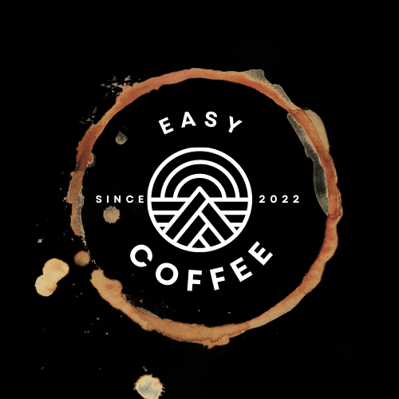
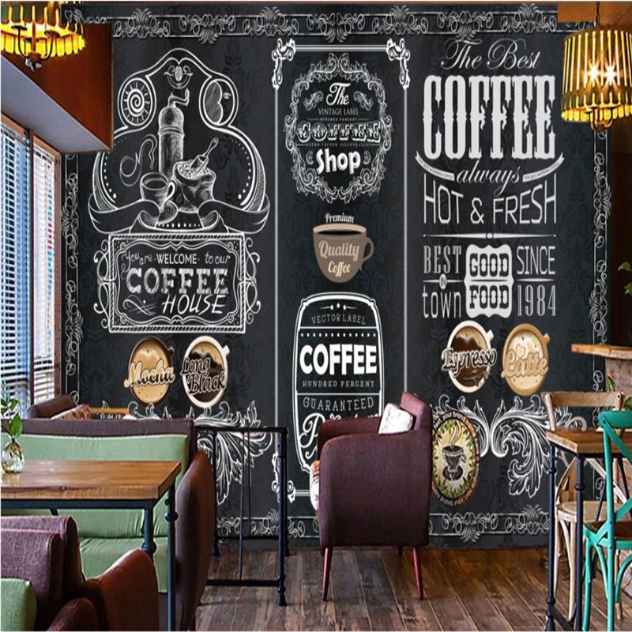

EASY COFFEE HOUSE
Since 2022
Coffee is darkly colored, bitter, slightly acidic and has a stimulating effect in humans,
primarily due
to its caffeine content. It is one of the most popular drinks in the world and can be prepared and
presented in a variety of ways (e.g., espresso, French press, caffè latte, or already-brewed canned
coffee).

THE BEST COFFEE SHOP
"Strange how the bitterness of coffee
makes life sweet."-Suhaib Rumi


TYPES OF COFFEE BEANS
- ARABICA COFFEE
- BLACK COFFEE
- LATTE COFFEE
- CAPPUCCINO
- ESPRESSO COFFEE
- MACCHIATO COFFEE
- IRISH COFFEE
If you can't imagine life without coffee, you're not alone: Ree Drummond starts every
day with a cup.
(She loves it so much that she just launched The Pioneer Woman coffee line!) There are so many
popular
types of coffee to choose from, but for Ree, cold brew is the way to go. She mastered the art of
making
perfect cold-brewed iced coffee at home years ago, and these days she gets growlers of the stuff
from
her Pawhuska, OK, shop and restaurant The Mercantile, so she can have a tall glass every morning.